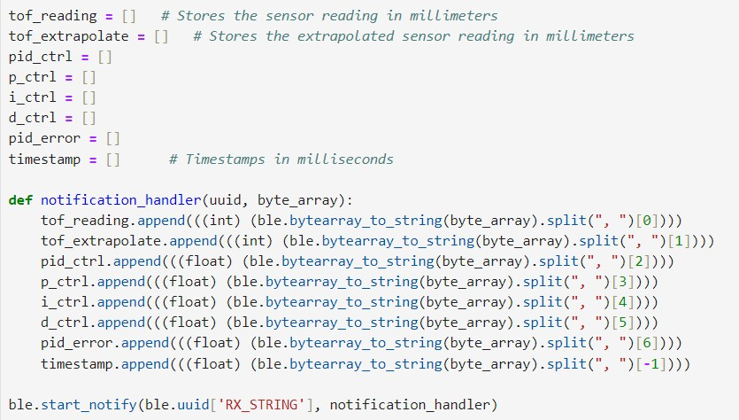
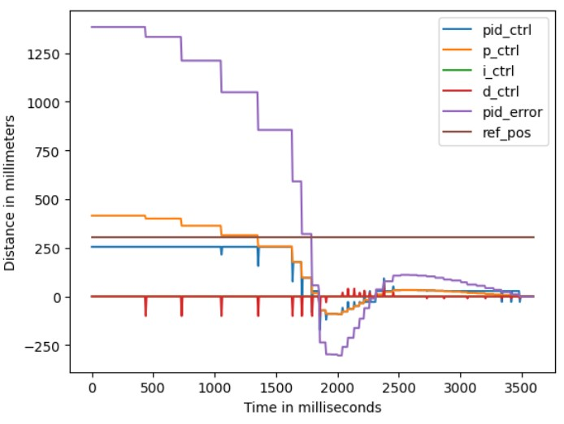
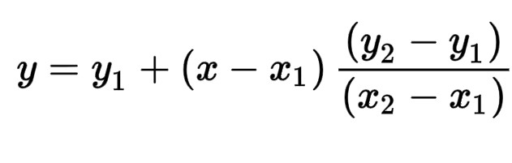
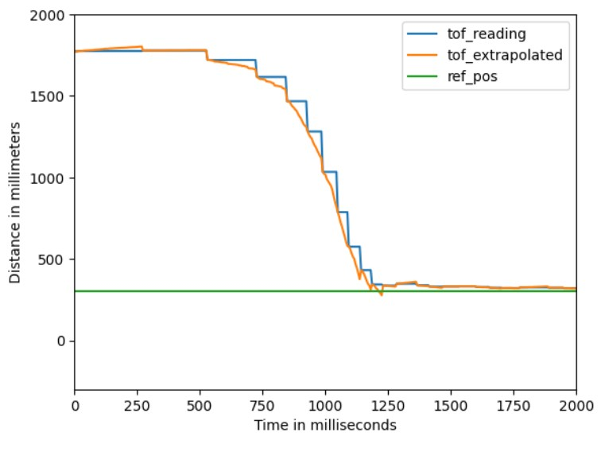
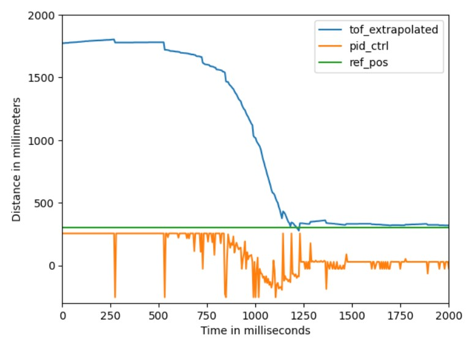

Objective
The aim of this lab is to gain experience with PID control by implementing a closed-loop control system to do position control on the robot based on the ToF sensor reading. All three terms of the PID controller are chosen to for implementation in the system.
Prelab
The code from previous labs was restructured to make testing and future work easier. First,
functions of motor control, IMU angle calculation (though not used in this lab), and sensor data
storage were encapsulated into header filers, to make the main program more readable. The PID control
was also made into a function later in this lab. Then, command lists were modifided, and changes
were made to the main function's loop.
Currently, the testing process roughly involves connecting to the robot via BLE, sending the command
START_RECORD which raises a flag and resets some intermediate variables to begin a new data
recording session, as shown in the following code block.
Then, in the main function, when the flag is raised, each loop checks if sensor data is available. If so,
the corresponding function is called, and the readings are passed to the PID calculation function, the output of which
is used to control the motor. Eventually, the data is saved in arrays using the data_save()
function, as shown in the code snippet below.
Note that the if condition not only checks the flag but also includes a condition to ensure that the time
since the start does not exceed 20 seconds. This start time variable is reset in the START_RECORD command.
This ensures that the robot will stop even if the Bluetooth connection fails. User can also send another command,
STOP_RECORD, to lower the flag for manually ending the control.
The data_save() function was defined as above. After the control process is terminated and the data is
collected, user can send the command GET_PID_INFO and the Artemis will send the data to the laptop end to be processed.
A notification handler was defined as following, to parse the message string and store the data into seperate arrays:

The length of the arrays is set to be 2,000. As there are five int arrays and three float arrays, the maximum storage
needed is 2000*5*2 + 2000*3*4 = 44000 Bytes, which is approximately 44kB. This takes an acceptable portion of the internal RAM
of 384kB.
Additionally, there were three other commands implemented for tweaking the PID gains, so that the gains can be updated without
having to reprogram the Artemis. The code for changing Kp is as follows, and the same is true for Kp and Kd.
Lab Tasks
P/I/D Discussion
The PID control is composed of three terms, the proportional control, the integral control and the derivative control. The formula
is given by pid_ctrl = Kp*error + Ki*error_integral + Kd*error_derivative, where Kp, Ki and Kd are constant gains.
As the name suggests, the proportional term corrects the current error (the difference between the current and the reference position) proportionally.
Increasing Kp results in a stronger correctional action, which means more rapid convergence to the desired position. However, if the Kp is too large,
the robot can easily overshoot because of the inertia.
The integral term helps reducing accumulated errors from the past. If there is a steady error existing, even if it is small, the integral
term would accumulate and amplifies this error over time, effectively correcting it. However, setting Ki too high can also lead to
overshooting because the integral error requires some time to accumulate and reflect its changes accurately.
The derivative term, on the other hand, acts as a dampening factor. It basically keeps track of the current speed of the robot, and slows down the correction process
if the current PI control values are too large. The downside of the D term is that it might amplify noise in the system, potentially leading to erratic behaviour.
A combination of all the three controllers was selected for implementation in this lab. The requirement was for the car to start from 2 to 4 meters away
and quickly reach the wall, stopping precisely 1 foot away from it. The initial large position error would cause the car to start very quickly,
potentially leading to a collision with the wall. Using only the P controller and/or I controller could not solve the overshooting issue unless Kp is set to
a very small value, but in that case, the car would become too slow when it comes near the wall. Therefore, the D term is necessary to adjust the car's speed
with negative feedback, allowing Kp to be increased. After testing, an appropriate set of parameters was found to be: Kp=0.3, Ki=0.001, Kd=100.
Implementation and Results
The implementation of the PID control function is shown in the following code snippet:
Proportional Control
The video below shows the behaviour of the robot with a single P controller, the value of Kp being 0.2. The
robot is obviously overshooting because of its inertia and it keeps oscillating.
Range Discussion:
The maximum distance error in this task would be about 3.5 meters, which is 3500 mm, whereas the maximum PID control value is 255. If calculated proportionally, the value of Kp should be 255/3500, approximately 0.07. However, to increase the car's forward speed, Kp can be raised so that the car can maintain maximum speed even when it is closer to the wall. This allows for an increase in Kp as long as the PID control value is clamped within ±255.
Integral Control
The integral controller was then implemented. With P and I controllers, the robot was able to stop at the desired position
if the starting position is not far, as shown below:
For the setting in the vedio, the values of the gains were: Kp=0.3, Ki=0.001. With the same set of parameters, but starting
farther from the wall, the robot behaves as demonstrated below:
Once the initial position error becomes too large, the P term will drive the robot into the wall. In order to maintain the highspeed while
preventing a collision, the D controller is necessary.
Additional Task: Wind-Up Protection
Windup protection is necessary for the integral term. The integral term is intended to eliminate steady-state errors, which means its contribution to the PID control value should not be excessively large.
However, if the robot is held in place for some reason (e.g., manually held stationary), resulting in a steady-state error accumulating, the integral term can become very large. When the robot is allowed to move again, the integral term can drive the robot excessively fast, causing it to move at full speed and taking a long time to eliminate the previouly accumulated value.
By clamping the value of the I term and limiting its range (as shown in lines 17 and 18 of the PID control code above), the value of the I term can be kept within a reasonable range at all times.
Derivative Control
The implementation of the D term is shown in lines 21 and 22 of the PID control code.
Sampling Time Discussion:
The interval between loops in the main loop of this program is approximately 10ms, much faster than the speed at which the ToF sensor reads new data. From the array records of Bluetooth message transmission, it can be seen that the ToF data changes only every four to eight loops. Therefore, when calculating the PID control, the previous_error and pid_error used to calculate edot are mostly the same, resulting in a D term value of 0 most of the time. A spike occurs only when new data is read from the ToF sensor, as shown in the figure below. This kind of D controller has no significant effect on motor control. To solve this issue, the extrapolation technique is adopted here to fill in the gaps between ToF samples.

Extrapolation

The extrapolation can be described by the formula above. The two most recent ToF readings are recorded, and before the
next one comes, a straight line equation determined by the two points is used to predict the current position based on dt.
While not always perfectly accurate, this method is much better than relying on unchanged ToF readings.
The code snippet from the main function is shown below:
The extrapolation result can be observed in the following plot. The step-like ToF readings were smoothed significantly
through extrapolation, making them much more suitable for PID calculations.

The left edge of the pink sticker on the ground indicates the 1ft position, so it can be observed that the robot is quite accurate, with precise movements and high speed. Note that the car always leans to the right when stopping; this is likely due to the different friction levels on both sides of wheels, so when both motor stops, the left side slides a bit further than the right side. This may be corrected in the next lab using IMU PID control.
The plot below shows ToF vs. time and motor input vs. time. It can be seen that in approximately 1.25 seconds, the car traveled 1.5m and stopped at the reference position. This means that the car's speed reached approximately 1.2m/s.

It can still be observed from the plot that the PID control value has a lot of spikes. Looking at the plot with more variables below, it turns out that these peaks all come from the D term. This phenomenon is known as derivative kick. Attempts were made to modify the derivative implementation based on instructions from here
, but unfortunately, it didn't work. Since the current implementation is functional and due to time constraints, further exploration of derivative kick was not pursued, but it could be a good investigation if time permits.

Discussion & Conclusion
In this lab, I reviewed the PID control model which I used previously, deepening my understanding of the effects of the Proportional, Integral, and Derivative terms. I also learned and applied the extrapolation method to approximate data points when the sampling rate is not high enough. I believe this knowledge and experience will be helpful in my future work in control system design and implementation.
References
Lab tutorials
Phenomenological Introduction to PID controllers